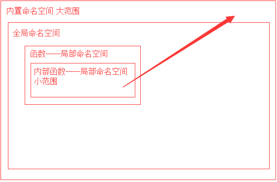
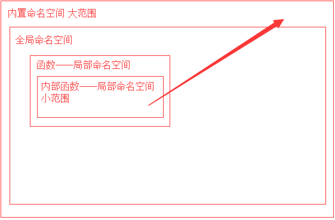

楔子
假如有一个函数，实现返回两个数中的较大值：
之前是不是我告诉你们要把结果 return 回来你们就照做了？可是你们有没有想过，我们为什么要把结果返回？如果我们不返回 m，直接在程序中打印，行不行？
来看结果：
def my_max(x,y):
m = x if x>y else y
my_max(10,20)
print(m)
Traceback (most recent call last):
File "<stdin>", line 1, in <module>
NameError: name 'm' is not defined
报错了！错误是“name 'm' is not defined”。变量 m 没有被定义。。。为啥？我明明定义了呀！
在这里我们首先回忆一下 python 代码运行的时候遇到函数是怎么做的。
从 python 解释器开始执行之后，就在内存中开辟了一个空间
每当遇到一个变量的时候，就把变量名和值之间的对应关系记录下来。
但是 当遇到函数定义的时候解释器只是象征性的将函数名读入内存 ，表示知道这个函数的存在了，至于函数内部的变量和逻辑解释器根本不关心。
等执行到函数调用的时候，python 解释器会 再开辟一块内存来存储这个函数里的内容 ，这个时候，才关注函数里面有哪些变量，而函数中的变量会存储在新开辟出来的内存中。函数中的变量只能在函数的内部使用，并且会随着函数执行完毕，这块内存中的所有内容也会被清空。
我们给这个“存放名字与值的关系”的空间起了一个名字——叫做命名空间
代码在运行伊始，创建的存储“变量名与值的关系”的空间叫做 全局命名空间 ，在函数的运行中开辟的临时的空间叫做局部命名空间
命名空间和作用域
命名空间的本质：存放名字与值的绑定关系
>>> import this
The Zen of Python, by Tim Peters
Beautiful is better than ugly.
Explicit is better than implicit.
Simple is better than complex.
Complex is better than complicated.
Flat is better than nested.
Sparse is better than dense.
Readability counts.
Special cases aren't special enough to break the rules.
Although practicality beats purity.
Errors should never pass silently.
Unless explicitly silenced.
In the face of ambiguity, refuse the temptation to guess.
There should be one-- and preferably only one --obvious way to do it.
Although that way may not be obvious at first unless you're Dutch.
Now is better than never.
Although never is often better than *right* now.
If the implementation is hard to explain, it's a bad idea.
If the implementation is easy to explain, it may be a good idea.
Namespaces are one honking great idea -- let's do more of those!
在 python 之禅中提到过：命名空间是一种绝妙的理念，让我们尽情的使用发挥吧！
命名空间一共分为三种：
全局命名空间
局部命名空间
内置命名空间
内置命名空间中存放了 python 解释器为我们提供的名字：input,print,str,list,tuple...它们都是我们熟悉的，拿过来就可以用的方法。
三种命名空间之间的加载与取值顺序：
加载顺序：内置命名空间(程序运行前加载)-> 全局命名空间(程序运行中：从上到下加载)-> 局部命名空间(程序运行中：调用时才加载)
取值：
在局部调用：局部命名空间-> 全局命名空间-> 内置命名空间
在全局调用：全局命名空间-> 内置命名空间
作用域
作用域就是作用范围，按照生效范围可以分为全局作用域和局部作用域。
全局作用域：包含 内置名称空间、全局名称空间 ，在整个文件的任意位置都能被引用、全局有效
局部作用域：局部名称空间，只能在局部范围内生效
globals 和 locals 方法
global 关键字
函数的嵌套和作用域链
函数的嵌套调用
def max2(x,y):
m = x if x>y else y
return m
def max4(a,b,c,d):
res1 = max2(a,b)
res2 = max2(res1,c)
res3 = max2(res2,d)
return res3
# max4(23,-7,31,11)
函数的嵌套定义
函数的作用域链
nonlocal 关键字
函数名的本质
函数名本质上就是函数的内存地址
1.可以被引用
2.可以被当作容器类型的元素
def f1():
print('f1')
def f2():
print('f2')
def f3():
print('f3')
l = [f1,f2,f3]
d = {'f1':f1,'f2':f2,'f3':f3}
#调用
l[0]()
d['f2']()
3.可以当作函数的参数和返回值
*不明白？那就记住一句话，就当普通变量用
闭包
闭包函数：
内部函数包含对外部作用域而非全剧作用域名字的引用，该内部函数称为闭包函数
函数内部定义的函数称为内部函数
由于有了作用域的关系，我们就不能拿到函数内部的变量和函数了。如果我们就是想拿怎么办呢？返回呀！
我们都知道函数内的变量我们要想在函数外部用，可以直接返回这个变量，那么如果我们想在函数外部调用函数内部的函数呢？
是不是直接就把这个函数的名字返回就好了？
这才是闭包函数最常用的用法
判断闭包函数的方法__closure__
#输出的__closure__有cell元素 ：是闭包函数
def func():
name = 'eva'
def inner():
print(name)
print(inner.__closure__)
return inner
f = func()
f()
#输出的__closure__为None ：不是闭包函数
name = 'jason'
def func2():
def inner():
print(name)
print(inner.__closure__)
return inner
f2 = func2()
f2()
def wrapper():
money = 1000
def func():
name = 'eva'
def inner():
print(name,money)
return inner
return func
f = wrapper()
i = f()
i()
from urllib.request import urlopen
def index():
url = "http://www.xiaohua100.cn/index.html"
def get():
return urlopen(url).read()
return get
xiaohua = index()
content = xiaohua()
print(content)
本章小结
命名空间：
一共有三种命名空间从大范围到小范围的顺序：内置命名空间、全局命名空间、局部命名空间
作用域（包括函数的作用域链）：
 

函数的嵌套：
嵌套调用
嵌套定义：定义在内部的函数无法直接在全局被调用
函数名的本质：
就是一个变量，保存了函数所在的内存地址
闭包：
内部函数包含对外部作用域而非全剧作用域名字的引用，该内部函数称为闭包函数
创建日期: 2022-04-01